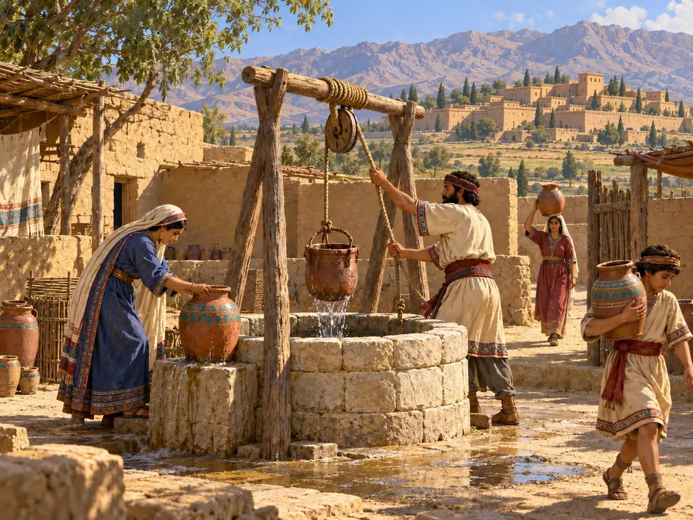
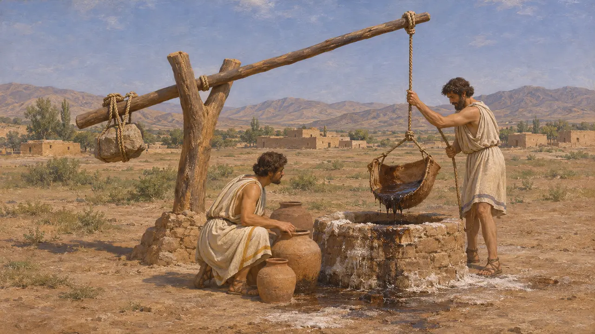
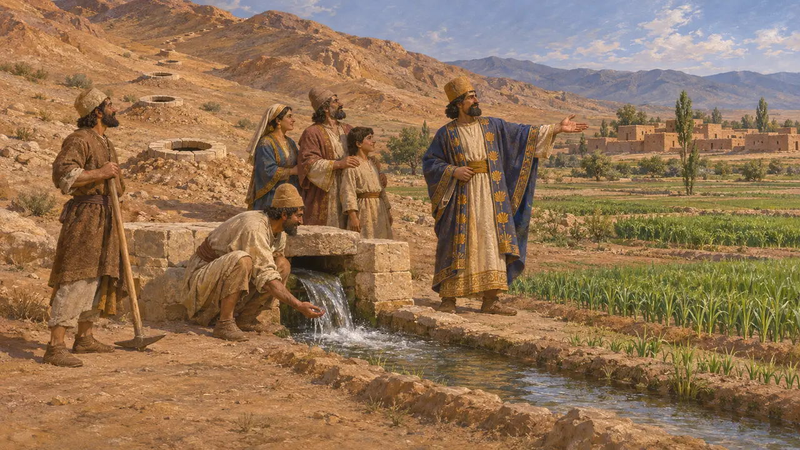
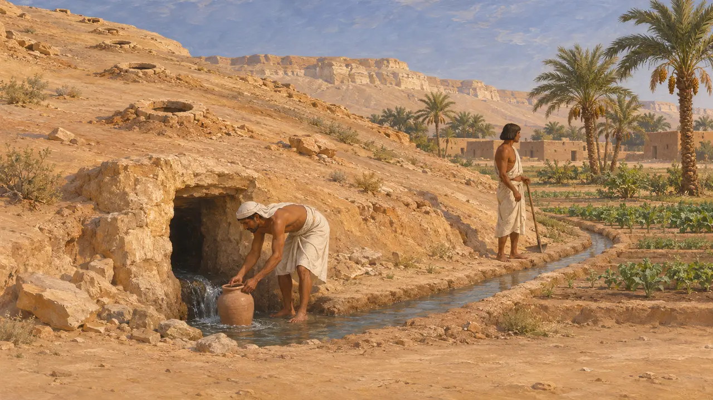
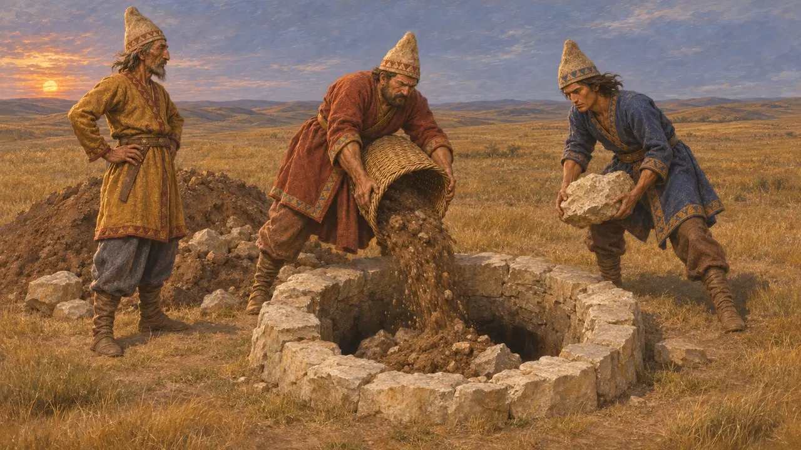
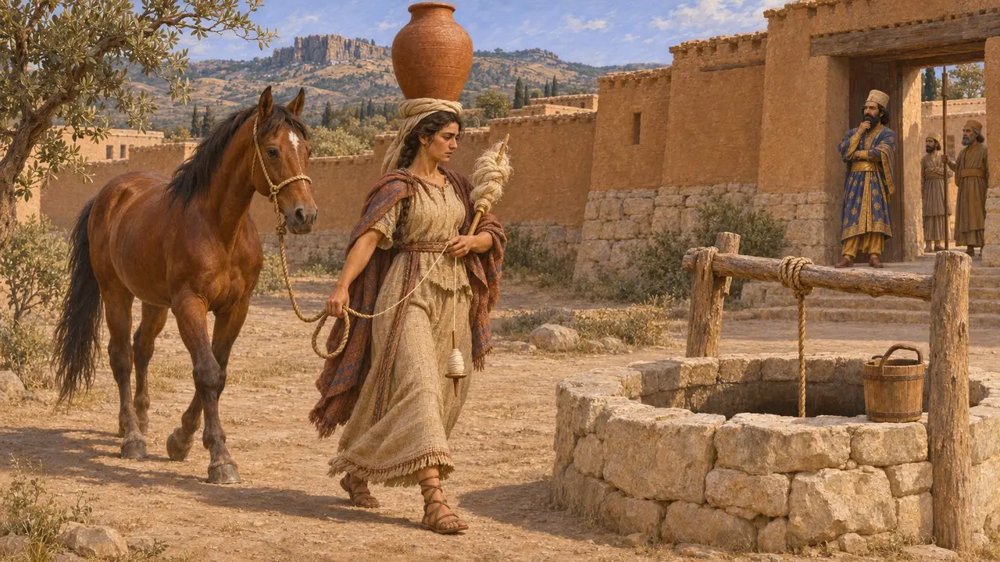

在波斯诸王统治的干旱土地上，水井是最古老的取水方式之一。与河流、运河、泉水和地下暗渠一道，水井供养着家户、行旅和军队。对水源的控制决定了人们能在何处耕作和定居；史料显示，在波斯统治下，水源被寻找、被分享，也被争夺。
游戏中： 游戏中的水井为5格范围内的房屋供水，且无需劳工。实际上，汲水和运水是每日的劳作，许多城镇依赖河流、运河和地下水渠的程度不亚于水井。

从地下提水
古代记述希罗多德记载了基西亚境内阿尔德里卡附近的一口井，公元前490年后，大流士将被俘的埃雷特里亚人安置于此。人们用一根摆杆从井中汲取沥青、盐和油，杆端挂的不是水桶，而是半张皮囊。这类配重提升杆在近东早已有之；另一类证据——亚述宫殿浮雕——也表现了它们的使用情形。
Herodotus 6.119

引水之功的赏赐
古代记述波利比乌斯写作于公元前2世纪。他说，波斯人统治亚洲时，凡将水引至无水之地者，皆可获该地五代的使用权。他将此与从山中开凿的地下水渠联系起来，即后世所称的坎儿井，通过一连串竖井汲取地下水。他的记载年代较晚，但与波斯行政在其他方面表现出的对开辟新耕地的关注相吻合。
Polybius 10.28

谁最先开凿坎儿井
争夺中地下水渠起源于何处，史家至今仍有争论。有人倾向于认为它起源于伊朗高原，并在波斯统治下传播开来；也有考古学者主张阿拉伯半岛东南部的暗渠年代更早。在埃及哈里杰绿洲的艾因马纳维尔，发掘出的暗渠以及记录水权份额交易的波斯时期世俗体陶片表明，这类系统在阿契美尼德统治下确曾运转。至于波西斯本地水渠的确切年代，则更难断定。
P. Briant (ed.), Irrigation et drainage dans l'Antiquité, 2001

战争中的水井
古代记述希罗多德记载，约公元前513年大流士进入斯基泰时，斯基泰人一路后撤，并堵塞沿途的水井和泉眼，使其军队无水可饮。他又说，更早之前的公元前525年，冈比西斯之所以能穿越沙漠进军埃及，全靠一位阿拉伯国王答应用骆驼驮着皮囊为大军运水。在这两个故事里，水源决定了大军能向何处进发。
Herodotus 4.120; Herodotus 3.9

派奥尼亚的运水女
后世传说希罗多德讲过一个发生在萨第斯的故事。大流士看见一名派奥尼亚妇女头顶水罐去打水，手牵一匹马，同时还在纺亚麻。她的族人如此勤劳，令他大为惊异，于是下令将他们迁往亚细亚。这个故事是为解释一次强制迁徙而编排的，并非实录，但它把打水视为寻常的日常劳作，而且常由妇女承担。
Herodotus 5.12
来源
- Herodotus, Histories 3.9, 4.120, 5.12, 6.119
- Polybius 10.28
- P. Briant (ed.), Irrigation et drainage dans l'Antiquité: qanats et canalisations souterraines en Iran, en Égypte et en Grèce, 2001
- P. Briant, From Cyrus to Alexander, 2002